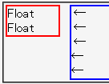

フロートの横に、フロートに重ならないようにマージンを設置したブロックボックスを置く（いわゆる段組）とき、ブロックボックスの行でフロートの左右に置かれるものは、ほかの行に比べて文字列の端がずれている。
<div style="float:left; width:4em; border:2px solid red;"> Float<br>Float</div> <div style="margin-left:5em; padding:0; border:2px solid blue;"> ←<br>←<br>←<br>←<br>←</div>
右側のブロックボックスの1行目から3行目はフロートボックスの右方にある行です。4行目と5行目はフロートボックスの右方にない行です。矢印記号の位置を比較してください。
Netscape7.1標準モード
WinIE6.0標準モード
ブロックボックスのwidthプロパティを具体的な値で明示することでこのバグを回避することができます。
<div style="float:left; width:4em; border:2px solid red;"> Float<br>Float</div> <div style="margin-left:5em; width:50%; padding:0; border:2px solid blue;"> ←<br>←<br>←<br>←<br>←</div>